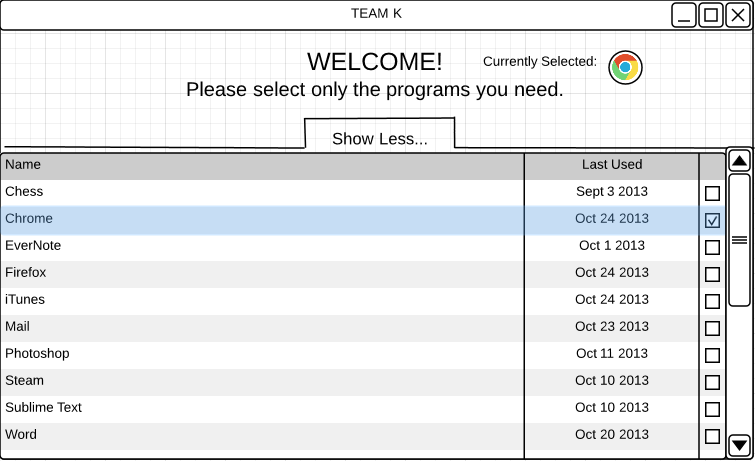
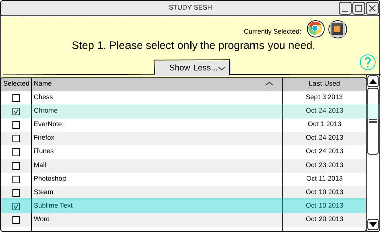
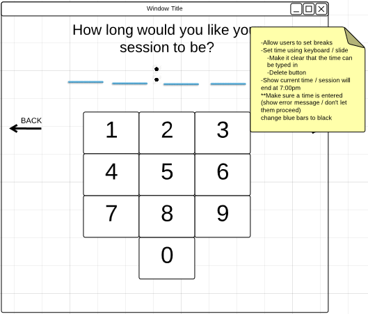
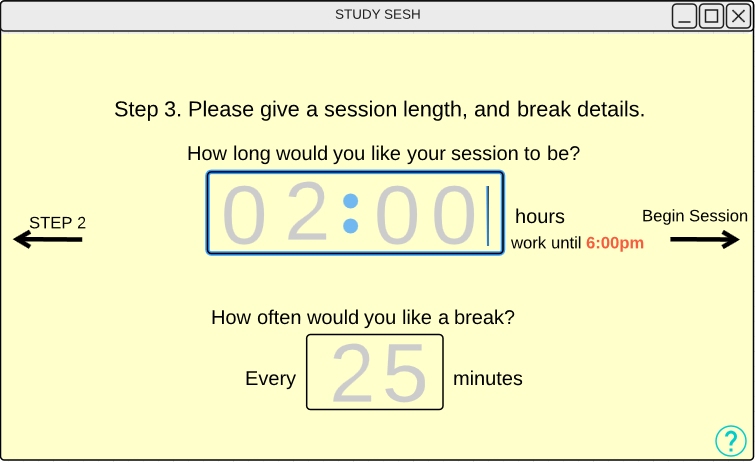

"Baby Boy" endured some major alterations. We put "sticky notes" on each page with a to-do list for the changes. Transforming "Baby Boy" into "Big Boy" was a slow process. The changes were made as needed. Some pages encountered major changes while some only needed minor changes.
Before
After
Before
After
There were also some universal changes we made. Changes such as a help button to every page to assist the user if he/she needs help and making all of the back and next buttons look the same. The design drastically changed after completing all of the changes and looked much better. As a team we were satisfied with how the design turned out however minor changes are always being made to the final prduct.